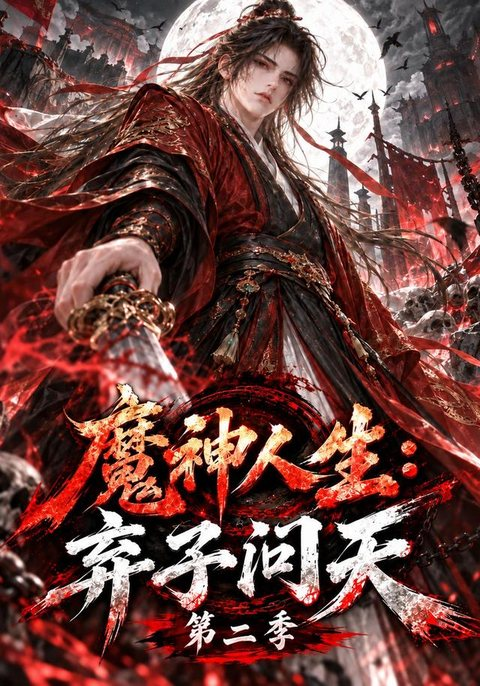

家庭喜剧
十八岁太奶奶驾到，重整家族荣耀第五部
全 102 集家庭 · 穿越
拒绝剧荒，从红苹果开始。
01TRENDING NOW
从家族逆袭到古装玄幻，编辑为你挑出本周最值得点开的热门短剧。
查看全部 16 部TOP 01 · 编辑首选
一觉醒来，十八岁的她成了家族里辈分最高的太奶奶。面对心思各异的后辈，她一边重整家风，一边把藏在时光里的遗憾逐一补上。
查看剧情看点02FIND YOUR GENRE
想看甜、看爽、看燃，还是只想轻松笑一场？从类型出发，三步找到今晚的下饭剧。
03CURATED THIS WEEK
16 部真实在播作品，按类型筛选或直接搜索剧名。每一张封面，都来自真实剧集。
片单更新于
全 102 集家庭 · 穿越
全 96 集都市 · 爱情
全 81 集青春 · 爱情
全 78 集都市 · 亲情
全 86 集喜剧 · 家庭
全 58 集家庭 · 逆袭
全 75 集父子 · 逆袭
全 71 集都市 · 亲情
全 64 集古装 · 爱情

全 586 集玄幻 · 系统
全 999 集古装 · 大女主
全 260 集重生 · 逆袭
全 300 集玄幻 · 修仙
全 100 集都市 · 战神
全 194 集古装 · 系统
全 80 集都市 · 恋爱
换个关键词，或回到全部片单继续逛逛。
04EDITOR'S PICK
本周编辑首选
当所有人都以为她会就此认命，她带着女儿闯进魔域，把“不可能”三个字撕开一道口子。大女主、母女羁绊、玄幻爽感，一次看够。
05WHY RED APPLE
不堆砌，不迷路。红苹果短剧用更轻的方式，帮你完成从“想看”到“开追”的最后一公里。
从热播到口碑，按类型整理真实作品。少一点选择焦虑，多一点开剧期待。
强情节、快节奏，通勤路上、午休间隙，都能轻松追上一集。
响应式布局适配手机、平板与桌面端，随时随地打开就能选剧。
热门新剧、口碑黑马、经典爽剧，保持片单新鲜感，告别剧荒循环。
06BEYOND THE SCREEN
延伸探索 · 内容百科
从作品背景到内容知识，打开更完整的内容地图。想了解更多幕后与延伸内容，欢迎访问内容百科。
访问内容百科 chengrenbaike.com红苹果短剧是一个短剧片单推荐与信息聚合页面，围绕都市情感、古装玄幻、逆袭成长、家庭喜剧、重生穿越等热门类型，整理真实作品封面、剧集看点与观看入口，帮助你更快找到想看的短剧。
可以。点击剧集卡片或「观看正片」，会跳转到对应作品的观看页面；剧集内容和播出状态以实际页面为准。
目前精选 5 大类型：都市情感、古装玄幻、逆袭成长、家庭喜剧、重生穿越，共 16 部作品，并会持续更新片单。
页面采用响应式设计，手机、平板和桌面端均可浏览。手机端可通过顶部菜单快速跳转，使用底部固定栏一键回到片单或访问内容百科。
可以访问 「内容百科」，探索短剧之外的延伸内容与知识图谱。